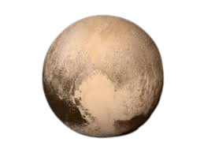

|  |
|
Plutón, designado (134340) Pluto, es un planeta enano del sistema solar situado a continuación de la órbita de Neptuno, descubierto por Clyde Tombaugh el 18 de febrero de 1930 (véase Día Internacional de Plutón). Su nombre se debe al dios mitológico romano Plutón (Hades, según la mitología griega). En la Asamblea General de la Unión Astronómica Internacional (UAI) celebrada en Praga el 24 de agosto de 2006, se creó una nueva categoría llamada planeta enano, en la que se incluye a Plutón. Posteriormente, en 2008, la UAI especificó una nueva categoría para los planetas enanos similares a Plutón en órbita más allá de Neptuno, a la que llamó plutoide. |